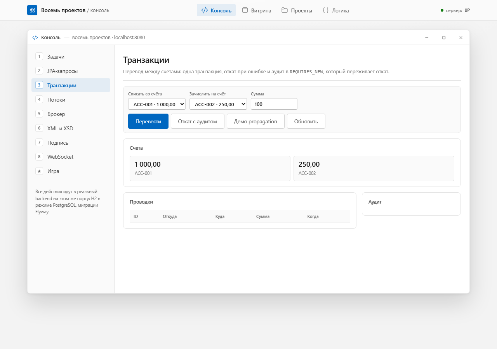

Как запустить
Нужна Java 17. Соберите jar и запустите приложение — консоль будет на главной странице.
./mvnw -DskipTests package java -jar target/eight-projects.jar
консоль · страница для GitHub Pages
Восемь разделов консоли обращаются к настоящему backend: задачи, JPA-запросы, транзакции с откатом, пул потоков, брокер, XML/XSD, подпись и WebSocket. На GitHub Pages backend нет, поэтому здесь — снимок экрана; сама консоль открывается в приложении, запущенном локально.

/api/v1/work-items, фильтр по статусу, пагинация и переходы по машине состояний.
Нужна Java 17. Соберите jar и запустите приложение — консоль будет на главной странице.
./mvnw -DskipTests package java -jar target/eight-projects.jar
H2 в режиме PostgreSQL, миграции Flyway, демо-данные при старте. Профиль postgres переключает на настоящую базу.
«Логика» работает целиком в браузере: на Pages ей backend не нужен.
Открыть игру →